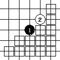
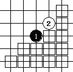

定石大全(总谱)
首页
定式及研究
#1 定石大全(总谱) 作者：二十七刀 发表时间：2009-5-16 10:58:00
可以背的精简谱
 五珠定石.rar
五珠定石.rar
［ 茗弈小刀 于 2009-5-16 11:53:50 时奖励此帖[金币加 20 威望加1］
#2 Re:定石大全(总谱) 作者：冰清 发表时间：2009-5-16 12:03:48
谢谢老师。
#3 Re:定石大全(总谱) 作者：寂寞的烟 发表时间：2009-5-16 12:13:24
 三克油！谢谢27大哥！
三克油！谢谢27大哥！
#4 Re:定石大全(总谱) 作者：越狱行辕 发表时间：2009-5-16 18:23:06
拿走借鉴
#5 Re:定石大全(总谱) 作者：形 发表时间：2009-6-3 9:13:30
谢谢老师，简单的好，复杂的记不住
#6 Re:定石大全(总谱) 作者：飞奔狂牛 发表时间：2009-6-6 20:01:02
好用啊！
#7 Re:定石大全(总谱) 作者：刘名字 发表时间：2011-1-9 23:45:28
谢谢分享！！！